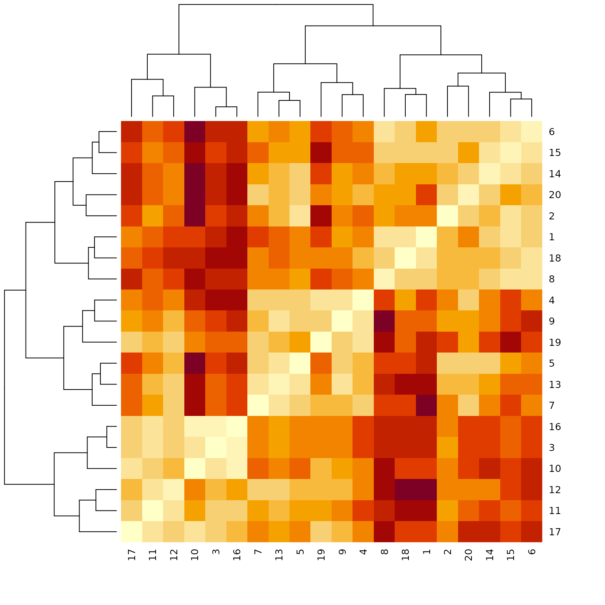

Motivation
Case-Based Reasoning (CBR) solves new problems by finding similar past cases. This package uses regression models—Cox Proportional Hazards (CPH), linear, and logistic—to define a principled distance between cases based on model coefficients. The workflow is: prepare data, fit a model, then query for similar cases.
Cox Proportional Hazard Model
We demonstrate the CPH model using the ovarian dataset
from the survival package.
ovarian$resid.ds <- factor(ovarian$resid.ds)
ovarian$rx <- factor(ovarian$rx)
ovarian$ecog.ps <- factor(ovarian$ecog.ps)
# initialize R6 object
cph_model <- CoxModel$new(Surv(futime, fustat) ~ age + resid.ds + rx + ecog.ps, ovarian)During initialization, cases with missing values are removed via
na.omit and character variables are converted to
factors.
Available Models
The package provides four model classes for estimating case similarity:
Linear Regression
- Simple, fast, and interpretable via coefficients.
- Limited to continuous dependent variables.
Logistic Regression
- Suited for binary outcomes (e.g., success/failure).
- Assumes a linear relationship on the logit scale.
Case Based Reasoning
Search for Similar Cases
We split the data into training and query sets, then retrieve the most similar training cases for each query case.
set.seed(42)
n <- nrow(ovarian)
trainID <- sample(1:n, floor(0.8 * n), FALSE)
testID <- (1:n)[-trainID]
cph_model <- CoxModel$new(Surv(futime, fustat) ~ age + resid.ds + rx + ecog.ps, ovarian[trainID, ])
# fit model
cph_model$fit()
# get similar cases
matched_data_tbl <- cph_model$get_similar_cases(query = ovarian[testID, ], k = 3)
knitr::kable(head(matched_data_tbl))| futime | fustat | age | resid.ds | rx | ecog.ps | scDist | caseId | |
|---|---|---|---|---|---|---|---|---|
| 10 | 563 | 1 | 55.1781 | 1 | 2 | 2 | 0.7533753 | 1 |
| 7 | 464 | 1 | 56.9370 | 2 | 2 | 2 | 1.1760552 | 2 |
| 24 | 353 | 1 | 63.2192 | 1 | 2 | 2 | 1.4624169 | 3 |
| 71 | 464 | 1 | 56.9370 | 2 | 2 | 2 | 0.3736327 | 1 |
| 241 | 353 | 1 | 63.2192 | 1 | 2 | 2 | 0.9489132 | 2 |
| 14 | 770 | 0 | 57.0521 | 2 | 2 | 1 | 1.0646258 | 3 |
After identifying the similar cases, you can extract them along with the verum data and compile them together. However, keep in mind the following notes:
Note 1: During the initialization step, we removed all cases with missing values in the data and endPoint variables. Therefore, it is crucial to perform a missing value analysis before proceeding.
Note 2: The data.frame returned from
cph_model$get_similar_cases includes four
additional columns:
-
caseId: This column allows you to map the similar cases to cases in the data. For example, if you had chosen k=3, the first three elements in the caseId column will be 1 (followed by three 2’s, and so on). These three cases are the three most similar cases to case 0 in the verum data. -
scDist: The calculated distance between the cases. -
scCaseId: Grouping number of the query case with its matched data. -
group: Grouping indicator for matched or query data.
These additional columns aid in organizing and interpreting the results, ensuring a clear understanding of the most similar cases and their corresponding query cases.

Distance Matrix Calculation
You can also compute and visualize the full distance matrix:
distance_matrix <- cph_model$calc_distance_matrix()
heatmap(distance_matrix)
cph_model$calc_distance_matrix()
computes the distance matrix between the train and test data. If test
data is omitted, it calculates distances within the training data. Rows
correspond to training observations and columns to test observations.
The result is also stored internally as
cph_model$dist_matrix.